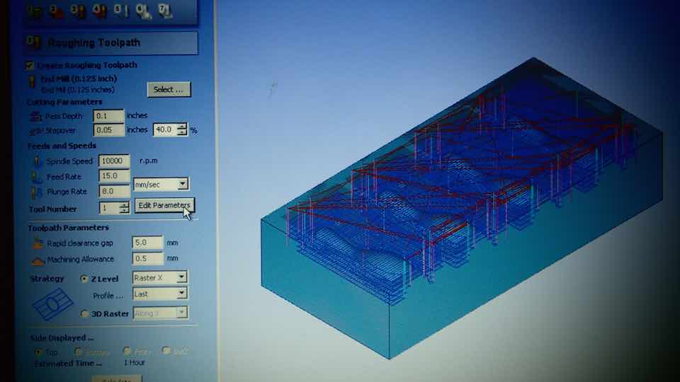

****************************************************************************************************************
ASSIGNMENT: DESIGN A 3D MOLD, MACHINE IT, AND CAST PARTS FROM IT
PROJECT : MAKE SOME CANDY AND GAMES FOR NINJA
SOFT : RHINOCEROS // CURA // NAUTA - FOR DWS SYSTEM // PARTWORKS 3D- FORSHOPBOT PRS CNC
MACHINE: 3D PRINTER PRUSA MENDEL I3 // DWS DIGITALWAX 020X // SHOPBOT PRS CNC
MATERIAL: ABS 3 MM // DC 500 CASTING RESIN // SMOOTH SIL 940 SILICON RUBBER // MATT CARVING GREEN WAX
DOWNLOAD:
****************************************************************************************************************
TEST 1 : NINJA ICE CUBE // 3D PRINT MOLD WITH PRUSA MENDEL I3
My first test was to use the 3D printer PRUSA MENDEL I3 to produce the mold.
With Ryno I created a simple empty box. Inside I modeled a simple ninja star. Then I mirrored it to produce 4 models and exported the stl file.

After appropriate scaling I then proceeded to create the G Code using Cura.

I prepared SMOOTH SIL 940 silicon rubber and poured into my mold.


After waiting 24h, I attempted to DEMOLD: it was impossible. The silicon rubber penetrates into the layer of the 3D print object
I had to destroy the mold to pull out the rubber.

AThe rubber mold is still usable: I just put it in some water and placed the mold in the freezer

This is the final result: It's cool. I can try to do this later with chocolate.

TEST 2 : NINJA LOLLIPOP // 3D PRINT MOLD WITH DWS
The second test that I did was to use the DWS DIGITALWAX 020X. It is a very detailed machine.
This machine is probably excessive for this type of test: I would just try if the resin is more waterproof than the ABS layers.
I proceed in the same way as the last experience : I created a ninja star in Rhinoceros and built a a container around it.
WWith NAUTA, a closed software for operating DWS DIGITALWAX 020X, you can prepare your stl file for the 3D print.
The resin material is more complicated to manipulate: you need to handling it very carefully. It's very expensive, and you need to use in a really clinical way, like a chemist.
The result is really better than Prusa print off course
The mold is waterproof and the demolding of the silicon rubber mold was really easy.
I should point out that the resin produces a positive mold, and even if it was created several days before, it leaves important traces of resin in the rubber.
TEST 3 : NINJA GAME // 3D MILL MOLD IN WAX WITH SHOPBOT
The 3rd test I did was to use the SHOPBOT PRS CNC to 3d mill a block of MATT CARVING GREEN WAX
This is a completely different process to those used previously
As usual I created my file in Rhinocheros : I chose some Bowling Pills for their round shapes
For the 3d mill I used the SHOPBOT PRS CNC Software to operate the machine
I set up the CNC Shobbot paremeter as follows:
Set up the measurements of the wax block :
